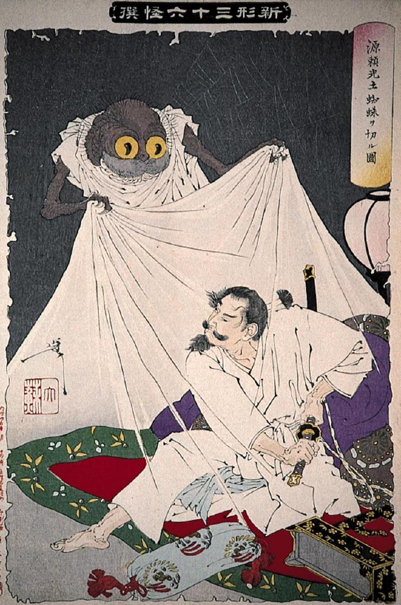

病床の源頼光を襲う土蜘蛛。頼光はとっさに刀に手をかけている。土蜘蛛は網のようなもの掴み引っ張っている。背後には蜘蛛の巣がみえる。
著作者：月岡芳年／出典：親書誌：A80_prague_0015：源頼光土蜘蛛ヲ切ル図；ミナモトノライゴウツチグモヲキルズ／日付：2011／資源識別子：A80_prague_0015_0001_0000
Copyright (c)2010- International Research Center for Japanese Studies, Kyoto, Japan. All rights reserved.